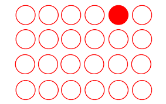
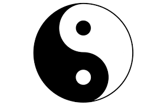
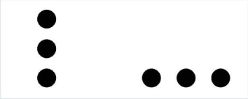
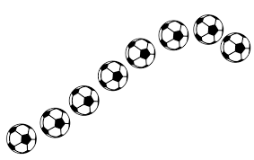
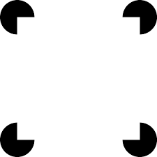

Gestalt
O que é Gestalt?
Gestalt é estudo da percepção humana em relação as formas, a existência de padrões de comportamento visual que o ser humano tem. Esses padrões compõem a base para as Leis da Gestal. Essa ciência defende que, para se compreendermos as partes de uma forma, é necessário antes, entender o todo que o envolve e o compõe.
Em outras palavras, poderíamos dizer que o Gestalt, estuda como o nosso cérebro percebe as formas. Poderíamos traduzir Gestalt como “A psicologia das Formas”.
A importância do Gestalt no Design
No design, a Gestalt nos ajuda a entender como a informação será passada através das formas que criamos.
Ela auxilia as pessoas a entenderem e assimilarem as informações que nós passamos pelas imagens.
Estudando Gestalt podemos perceber o porquê algumas formas agradam mais que as outras, o porquê enxergarmos um objeto de tal maneira, etc.
Com isso podemos usar as leis da Gestalt a nosso favor e de maneira mais consciente para melhorar os nossos projetos e manipulá-las para alcançar nossos objetos de comunicação.
Principais leis do Gestalt
Lei da Unidade
Uma unidade é um único elemento que se encerra em si mesmo ou também um conjunto de elementos percebidos que constituem “um todo”. Podemos definir uma unidade através das cores, sombras, texturas, pontos, linhas, pontos, etc; isolados ou relacionados entre si.

Lei da Segregação
Diz respeito a nossa capacidade perceptiva de evidenciar, destacar, separar uma ou mais unidades na composição inteira ou em partes dela. Essa segregação pode ser feita por diversos elementos visuais: cores, sombras, texturas, pontos, linhas e etc.
Lei da Unificação
A unificação acontece quando existem elementos iguais ou semelhantes distribuídos de forma coerente e harmônica.
Os princípios básicos da unificação são as leis de proximidade e a lei de semelhança.
Lei da Proximidade
Se refere a elementos que estão próximos. Elementos próximos uns dos outros tendem a se agruparem e são percebidos como um todo ou unidades dentro de um todo.
Lei da Semelhança
Se refere a elementos semelhantes.Elementos semelhantes tendem a se agruparem formando um como um todo ou unidades dentro de um todo. Essa semelhança pode ser cor, forma, tamanho, textura, etc.
Lei da Continuidade
A continuidade acontece quando elementos estão próximos e dão a impressão de seguir uma determinada direção. Quando existe uma repetição ordenada dos elementos.
Lei de Fechamento
O fechamento se estabelece para a formação de unidades através da nossa percepção. Nosso cérebro interpreta uma forma completa se os elementos estão estruturados de uma forma definida.
Lei da Pregnância da Forma
Essa é a principal lei do Gestalt.
Quanto mais evidente for a forma do objeto, quanto mais intuitivo e de fácil compreensão é a leitura, maior é o grau de pregnância do objeto.
Quanto melhor ou mais clara for a organização, maior a pregnância!
Desenvolvido Por Caio Falcão